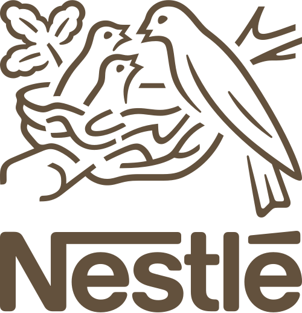
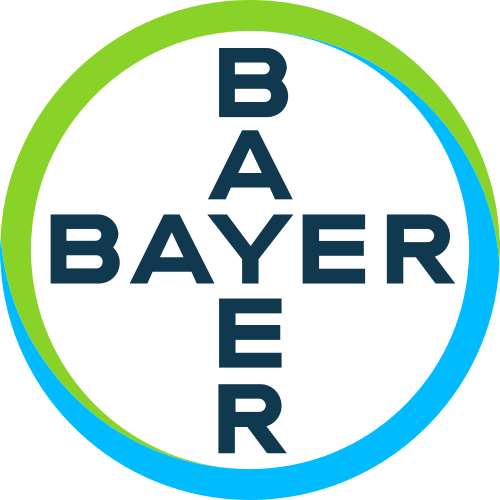

Важные решения снова приходят к Вам, хотя формально за них отвечают другие.
Диагностика системы управления для собственников
Верните себе время, а бизнесу — эффективность
Если бизнес работает, но ключевые решения, контроль и ответственность по-прежнему держатся на Вашем личном участии.
20 летв организационно-управленческом консалтинге
Вы узнаете себя?
Когда бизнес растет, но вместе с ним растет и Ваша личная нагрузка
Снаружи всё выглядит устойчиво: клиенты есть, команда работает, задачи закрываются.Но внутри бизнес всё сильнее завязан на Вас.
Команда сильная, но результат часто не совпадает с Вашими ожиданиями.
Приходится напоминать, перепроверять и снова объяснять.
Стратегические задачи откладываются из-за постоянной операционки.
Без Вас бизнес теряет темп, качество или устойчивость.
Проблема не обязательно в слабой команде.Часто система управления просто перестала соответствовать масштабу бизнеса.
Обсудить мою ситуациюЧто дает диагностика
Диагностика — первый шаг к спокойной управляемости
Не лекция и не набор общих рекомендаций. Татьяна разбирает Вашу управленческую систему и помогает увидеть причины перегрузки.
- 1Заявка
Вы оставляете контакт и коротко описываете запрос.
- 2Знакомство
Мы уточняем контекст бизнеса и договариваемся о встрече.
- 3Разбор
Смотрим на Вашу роль, команду, ответственность, процессы и понимаем причины.
- 4Карта действий
Фиксируем точки напряжения и приоритетные шаги.
Почему можно доверять
Татьяна Кузнецова
HR-эксперт и бизнес-советник первых лиц по вопросам управления персоналом и организационной системы.
20 лет
в организационно-управленческом консалтинге
MBA
преподаватель, бизнес-тренер и методолог
Основатель
консалтинговой компании
Среди клиентов




Что после диагностики
После диагностики у Вас появляется конкретный план действий
-
Состояние системы
Что происходит в ней прямо сейчас.
-
Сильные и слабые места
Что нужно изменить, а что — закрепить.
-
Поэтапный маршрут
В каком порядке двигаться дальше.
- Путь к автономности
Как уменьшить зависимость бизнеса от ручного управления.
На выходе
Спокойствие
Время
Стабильность
Для масштабирования, новых проектов, семьи и отдыха.
Первый шаг
Если бизнес держится на Вашей постоянной включенности,начните с диагностики
Диагностика управленческой системы
Разберём, где система забирает Ваше внимание, и определим приоритетные шаги к более автономной работе бизнеса.